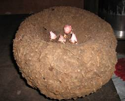

HORT 281 :: Lecture 26 :: ORIGIN, AREA, PRODUCTION, VARIETIES, PACKAGE OF PRACTICES FOR YAMS

Origin, area, production, varieties, package of practices for YAMS
Amorphophallus
(Syn: Elephant foot yam) Amorphophallus paeoniifolius
(Syn: A. campanulatus (Roxb.) Blume) (2n = 28)
(Hindi: Suran, Zamikand) Family: Araceae
Elephant foot yam is a remunerative and profitable stem tuber crop. The crop is gaining popularity due to its shade tolerance, easiness in cultivation, high productivity, less incidence of pests and diseases, steady demand and reasonably good price. Tubers are mainly used as vegetable after thorough cooking. Chips are made of starch-rich tubers. Tender stem and leaves are also used for vegetable purpose. Tubers contain 18.0% starch, 1-5% protein and upto 2% fat. Leaves contain 2-3% protein, 3% carbohydrates and 4-7% crude fibre. Tubers and leaves are quite acrid due to high content of oxalates. Acridity is usually removed by boiling fairly for a long time. Cultivation of elephant foot yam is limited to India, Philippines, Sri Lanka and South East Asia.
Unlike other tubers, Amorphophallus roots have many medicinal uses and are widely prescribed by Ayurvedic physicians. Amorphophallus corm is a good source of phyto-aestrogens and is effective alternate of complementary to conventional hormone replacement thereby for symptoms associated with menopause and chronic degenerative diseases in women.
Botany
Cultivated species A. paeonifolius is a robust herbaceous plant 1.0 – 1.5 m tall. Large dissected tripartite leaves constitute the luxuriant outspreading crown-like foliage, borne on a fairly thick single upright “stem”. The aerial “pseudostem” which is round with characteristic irregular blotches is botanically a leaf petiole.
Though crop is perennial due to underground stem, it is treated as an annual with duration of 8-9 months. It is usually harvested when top becomes yellow and withers (8-9 months after planting). It flowers once in 1-3 years. Inflorescence consists of a bell-shaped spathe surrounding a central yellow spadix and is borne on a very short stalk. It appears almost at ground level. Although wild species flower and set seeds profusely, cultivated species fall to set seeds under normal condition due to extreme protogyny coupled with delay in opening of spathe.
|  |
Amorphophallus paeonifolius
Climate and soil
Amorphophallus is a tropical / subtropical crop and hence thrives well under warm humid climate with a mean annual temperature of 30-35oC and a well distributed rain of 1000-1500 mm spread over a period of 6-8 months. It grows well on a variety of soils. Well drained sandy loam or sandy clay loam with near neutral soil reaction is ideal for the crop. Soil should be rich in organic matter with adequate amount of available plant nutrients.
Varieties
Sree Padma– Developed at CTCRI, Thiruvannthapuram; yield 42 t/ha
Gajendra– Developed at APAU, Hyderabad.
Propagation
Amorphophallus is propagated through corm. Corms harvested during November are stored in well ventilated rooms. Before planting during February, the corm is cut into setts of 750-100 g. each bearing a portion of central bud. Cut corms are smeared with cow dung slurry or wood ash and allowed to dry in partial shade. Rapid seed corm production technique suggests use of cormels and mini sett transplants of 100 g size for planting at a closer spacing of 45 x 30 cm.
Cultivation practices
After one or two ploughings, pits of size 60 x 60 x 45 cm are made at a spacing of 90 x 90 cm during February. For harvesting small to medium sized tubers, distance between pits is reduced to 60 x 60 cm. Pits are half filled with top soil and well dried farmyard manure @ 2.0-2.5 kg/pit and wood ash. Planting material is placed vertically in the pit. After compacting the planted tubers, pits are covered with organic mulches like green leaves or paddy straw. Apply fertilizer @ 40 kg N, 60 kg P2O5 and 50 kg K2O / ha 45 days after plating along with mulching and application of cow dung or compost after receipt of rains. This is followed by digging interspaces and light earthing up. Top dressing is done with 40 kg N, 50 kg K2O again one month after, along with shallow intercultural operations like weeding, light digging and earthing up.
Amorphophallus is mainly grown as a rainfed crop. During periods of late receipt of monsoon, a light irrigation is given during early stages of crop. Crop is susceptible to water stagnation.
Mulching immediately after planting is the most important operation in Amorphophallus. It not only conserves soil moisture and regulates soil temperature, but also suppresses weed growth.
A plant usually produces a single “stem”. In case of more numbers, it is advisable to remove it retaining only one healthy one.
Pests and diseases
Amorphophallus is free from major pests and diseases except collar rot caused by Sclerotium rolfsii. Water logging, poor drainage and mechanical injury at the collar region favour disease incidence. Disease can be managed by use of disease-free planting material, removal of infected plants, improving drainage, application of neem cake in soil, use of bio-control agents like Trichoderma and drenching soil with captan 0.2%.
Harvest and yield
Underground corms are harvested with pick axe or by digging when the top is completely withered and fallen. Crop will be ready for harvest in 8-9 months after planting. However on better market price, tubers can be harvested six month onwards. Average yield is 30 - 40 t/ha.
*********
1. Sree Padma is a variety of
a. Yam bean b. Chinese potato c. Greater yam d. Elephant foot yam
2. The edible portion of yam is the under ground modified ________
a. A. campanulatus b. A. oncophyllus c. A. riveri, d. All the above
3. The maturity indices for harvest of elephant foot yam is __________
a. Cracking of soil b. Drooping of the leaves
c. Yellowing and drying of leaves d. All the above
4. The total crop duration of Elephant foot yam is ________ months after planting
a. 4-5 b. 6-7 c. 9-10 d. None
5. The origin of elephant foot yam is __________
a. Europe b. India c. China d. Japan
YAMS
Plants belonging to genus Dioscorea of family Discoreaceae under Monocotyledons are commonly known as yams. Dioscorea alata (greater yam) and D. esculenta (lesser yam) are main yams of India. Another species, D. routundata (white yam or African yam), which is under extensive cultivation in Western Africa, recently introduced to India is becoming popular. All species are typical tropical crops grown for carbohydrate rich underground tubers. They form staple food in many parts of Western Africa. In D. alata, tubers are peeled, cooked and sued as vegetable. D. esculenta is consumed after boiling and peeling.
Dioscorea alata Dioscorea esculenta |

Botany
Yam tuber is neither a root structure nor a stem, but may have its origin as a hypocotyls structure. Tuber grows from a small corm structure located at base of stem. In all yams, tubers are renewed annually. Tubers may be single or two or three. D. esculenta produces a large number of small and spindle shaped tubers. D. bulbfera and D.alata produces a large number of small and spindle shaped tubers. D. bulbifera and D.alata produce aerial bulbs called bulbils from axils of leaves. Whole tubers or pieces of tubers with stem are used for planting in yams. Bulbils can also used for propagation.
Stem is weak and climbs on trees by twining. In D. rotundata stem remains erect upto one metre height. Leaves are simple. All species are dioecious. Fruits are dehiscent tri-locular capsules. Seeds are small and dispersed by wind. Even though all the species have seed dormancy for three months, D. alata does not exhibit seed dormancy. In D. alata, majority of male clones are tetraploids (2n = 40) and majority of females have higher ploidy level (2n=60 or 80).
Varieties
Improved varieties developed at Central Tuber Crops Research Institute (CTCRI), Sreekaryam, Thiruvananthapuram in Kerala are given below:
Greater yam
(Dioscorea alata)
(Hindi: Ratula) (2n = 20, 30, 40-80)
Sree Keerthi:Tubers are conical with brown skin and white flesh having 20-22% starch. It yields 25-30 t/ha in 9-10 months.
Sree Roopa:Tubers are digitate in shape with black skin and white flesh. Productivity is 25-30 t/ha in 9-10 months.
Sree Shilpa: Tubers are swollen, oval and smooth with black skin and white flesh. Yield is 28 t/ha in 8 months.
Indu: Indu is a high yielding (39.39 t/ha) variety developed by Kerala Agricultural University. Tubers are digitate with brownish black skin and white to pale flesh.
White yam (D. rotundata)
Sree Subhna: Tubers are cylindrical with brown and partially hairy skin and white flesh. Yield is 35-40 t/ha in 9-10 months.
Sree Priya: It produces 2-3 tubers having smooth surface and good cooking quality. Yield is 35-40 t/ha in 9-10 months.
Sree Dhanya:This is a dwarf and bush variety with spineless stem and tubers containing 23.3% starch.
Propagation and time of planting
In greater yam and white yam, tuber pieces of 250-300 g size are used as planting material. For this, tubers are cut longitudinally with a portion of stem end and allowed to dry under partial shade after dipping in cow dung slurry. Planting is usually done during March-April.
Plough / dig land to a depth of 15-20 cm. Take pits of 45 cm3 at a distance of 1 m. Apply 1½ kg compost or well rotten cattle manure in the pit and full up to ¾ with top soil. Plant tubers and mulch with dry leaves. Approximately 1800-2700 kg seed material is required to plant one hectare.
Manuring
Apply cattle manure or compost @ 10 t/ha as basal dressing before planting. A fertilizer dose of 80 kg N, 60 kg P2O5 and 80 kg K2O per hectare in two split doses is needed for yams. Half dose of N, full dose of phosphorus and half dose of potash are to be applied within a week after sprouting. Remaining nitrogen and potash may be applied one month after the first application. Top dressing of fertilizers should be followed by weeding and earthing up.
Interculture
Vines are allowed to trail on shrubs or trees or props for high productivity. Tubers are harvested in 9-10 months when leaves turn yellow in colour. Harvesting is done by digging surrounding, area and exposing tubers.
Lesser Yam (D. esculenta) (2n = 40, 60, 90, 100)
Hindi: (Suthni)
Sree Latha: Tubers are oblong to fusiform in shape with creamy white flesh and greyish brown skin covered with thin hairs. It yields 20-25 t/ha in 8-9 months. Tubers have 18.4% starch content.
Sree Kala: Tuber is sweet, round and smooth. Yield is 20-25 t/ha in 8-9 months.
Cultivation of lesser yam is different from that of greater yam or white yam. Plough / dig the land thoroughly and make small mounds at a distance of 70 cm after incorporating compost or well rotten cow dung. Plant whole tubers of 100-150 g. Manuring and other cultivation practices are similar to that of greater yam. Trailing is necessary to expose leaves to sunlight. It is done within 15 days after sprouting by coir rope attached to artificial supports in open area. Lesser yam is harvested in 8-9 months after planting. Harvesting is done by digging out tubers carefully.
Scale insect is a serious pest of yam and is usually controlled by dipping planting material in monocrotophos (0.05%).
*********
1. Yams are __________ plants
a. Monecious b. Dioecious c. Shade loving d. Perfect flowers
2. The basic chromosome number of Dioscorea is ___________
a. 10 b. 20 c. 30 d. 40
3. _____________ covers the major cropped area in Asia
a. D. alata b. D. esculenta c. D. rotandata d. D. cayenensis
4. Sree Shilpa is __________ of D. alata
a. Hybrid b. Variety c. OP variety d. Introduction
5. Among the yams, ________ doesn’t require staking
a. D. rotundata b. D. alata c. D. esculenta d. D. bulbfera
| Download this lecture as PDF here |